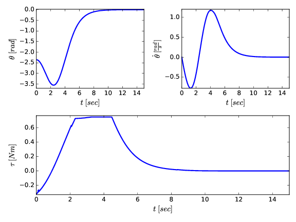

Let us consider the simple pendulum depicted on the right. The world reference frame is placed on top of the pin joing, with the \(x\)-axis pointing right, and \(y\)-axis pointing up. The tip of the bob is restricted to lie on a circle \(S^1\) of radius \(l\). As a result, the position of the tip of the bob can be written as
\begin{equation*}
r = l\left(\sin{\theta}, \; \cos{\theta}\right)
\end{equation*}
Differentiating this expression, we acquire the velocity and acceleration of the tip of the bob in terms of the pendulum angle \(\theta\).
\begin{align*}
\dot{r} &= l\dot{\theta}\left(\cos{\theta}, \; -\sin{\theta}\right) \\
\ddot{r} &= l\ddot{\theta}\left(\cos{\theta}, \; -\sin{\theta}\right) - l\dot{\theta}^2 \left( \sin{\theta} \; \cos{\theta} \right)
\end{align*}
Equations of Motion
Drawing the free-body diagram of the pendulum suggests that there are two forces acting on the bob, the tension, \(T\), acting along the cable towards the revolute joing, the gravity, \(g(0 \;\; -1)\) acting along the negative \(y\)-direction, and the force \(\overrightarrow{f}\) due to the input torque around the revolute joint. As a result, Newton's law gives
\begin{equation*}
{ m\ddot{r} = F = T \frac{-r}{\left|r\right|} + m g \left(0 \;\; -1\right) + \overrightarrow{f} }
\end{equation*}
Inserting the expressions for \(r\), \(\dot{r}\), and \(\ddot{r}\) derived above, we get the following two equations
\begin{align}
\label{eq:implicit_eq1}
ml\left( \ddot{\theta}\cos{\theta} - \dot{\theta}^2 \sin{\theta} \right) &= -T\sin{\theta} - f\cos{\theta} \\
-ml \left( \ddot{\theta}\sin{\theta} + \dot{\theta}^2 \cos{\theta} \right) &= -T \cos{\theta} - mg + f\sin{\theta}
\label{eq:implicit_eq2}
\end{align}
Multiple equation \eqref{eq:implicit_eq1} by \(\cos{\theta}\) and equation \eqref{eq:implicit_eq2} by \(-\sin{\theta}\) and add them together to get
\begin{equation}
\ddot{\theta} = \zeta \sin{\theta} + \tau
\label{eq:EoM_Newton}
\end{equation}
where \(\zeta = \frac{g}{l}\) and \(\tau = m l f\) is the input torque. We regard \eqref{eq:EoM_Newton} as the equations of motion of the simple pendulum. Note that we can also find an expression for the tension \(T\) on the cable by multiplying equation \eqref{eq:implicit_eq1} by \(\sin{\theta}\) and equation \eqref{eq:implicit_eq2} by \(\cos{\theta}\) and adding them together
\begin{equation*}
T = m\left(l\dot{\theta}^2 - g \cos{\theta}\right)
\end{equation*}
Finally, let us briefly discuss how we could derive the equations of motion \eqref{eq:EoM_Newton} more succinctly using Lagrange's equations. To this end, we define the lagrangian \(L: S^1 \times \mathbb{R} \rightarrow \mathbb{R}\) by \(L = T-U \), where \(T: S^1 \times \mathbb{R} \rightarrow \mathbb{R} \) is the kinetic energy and \(U: S^1 \rightarrow \mathbb{R}\) is the potential energy
\begin{equation}
L = \frac{1}{2}ml^2\dot{\theta}^2 - mgl\cos{\theta}
\label{eq:lagrangian}
\end{equation}
We then use Lagrange's equations to come up with the equations of motion of our mechanical system. The Lagrange's equations are given by
\begin{equation}
\frac{d}{dt}\frac{\partial L}{\partial \dot{\theta}} - \frac{\partial L}{\partial \theta} = u
\label{eq:lagranges_eqns}
\end{equation}
where \(u\) is the external input to the system. As a result we get the equations of motion as
\begin{equation}
ml^2 \ddot{\theta} - mgl \sin{\theta} = ml^2\tau
\label{eq:EoM_Lagrange}
\end{equation}
which is the same as the equations of motion \eqref{eq:EoM_Newton} we derived using Newton's law. Expressing the equaions of motion as a set of first order differential equation, we get
\begin{equation}
{\dot{x} =
\begin{bmatrix}
x_2 \\ \zeta \sin{x_1}
\end{bmatrix} +
\begin{bmatrix}
0 \\ 1
\end{bmatrix}u =: f(x) + g(x)u }
\label{eq:system_dynamics}
\end{equation}
where \( x:= \left( \theta \;\; \dot{\theta} \right) \).
Controlling the Pendulum via Local Stabilization
Now that we have a model of the behavior of the simple pendulum, we would like to swing it up and stabilize it around the upward equilibrium point. This stabilization problem would be pretty easy if our actuator at the revolute joint is very strong compared to the inertia of the pendulum. However, we assume that the actuator we ahve is not strong enough to overcome gravity when the pendulum is at hte horizontal configuration, i.e., when \(\theta = \pm \frac{\pi}{2}\). This translates to the constrain that \(|\tau| < \zeta\). To be concrete, let us assume the following torque limit
\begin{equation}
|\tau| \leq \frac{3 \zeta}{4}
\label{eq:input_limit}
\end{equation}
The problem is then to come up with a feasible trajectory \(x^*, \tau^*\) which swings the pendulum up. This problem is known as the ``motion planning'' problem in robotics and is briefly introduced in the ``trajectory optimization'' section. In the control design, we are going to assume that we are given such a trajectory and will be concerned with stabilizing this trajectory. For this purpose, we are going to linearize the system dynamics \eqref{eq:system_dynamics} around the feasible trajectory to get the linear time-varying system
\begin{equation}
\dot{\delta x} = A(t) \delta x + B \delta u
\label{eq:linearization_along_traj}
\end{equation}
where \(A = \frac{\partial f}{\partial x}\bigg|_{x=x^*(t)} \), \(B = g(x) = [0 \; \; 1]^\top \) and \(\tau = \tau^* + \delta u \). This is the problem we are going to tackle in the control design section.
Controlling the Pendulum via Energy Shaping
The mechanical energy of the pendulum is given by
\begin{equation}
\mathcal{H} = \frac{1}{2}ml^2 \dot{\theta}^2 + mgl \cos{\theta}
\label{eq:pendulum_energy}
\end{equation}
The point in the state-space that we want to stabilize the pendulum to has reference energy $\mathcal{H}_{ref} = mgl$. Define the error in the energy as $\tilde{\mathcal{H}} := \mathcal{H} - \mathcal{H}_{ref}$. Consider the function $V = \frac{1}{2}\tilde{\mathcal{H}}^2: S^1 \times \mathbb{R} \rightarrow \mathbb{R}$ whose Lie derivative along the trajectories of the system is given by
\begin{equation*}
{ \dot{V} = \tilde{\mathcal{H}}\dot{\mathcal{H}} = \dot{\theta}\tau }
\end{equation*}
This expression suggests that we choose the control input $\tau = -k \dot{\theta}\mathcal{H}$. With this choice, the above equation becomes
\begin{equation*}
\dot{V} = -k \dot{\theta}^2 V
\end{equation*}
which implies that either $\dot{\theta} \equiv 0$, or $V \rightarrow 0$ as $t \rightarrow \infty$. Note that if $\dot{\theta} \equiv 0$, then both $\tau \equiv 0$ and $\ddot{\theta} \equiv 0$. Therefore, we must have that $\sin{\theta} \equiv 0$, which is true if and only if $\theta \equiv 0$, or $\theta = \pm \pi$. If $\theta \equiv 0$, we are done. If, on the other hand, $\theta = \pm \pi$, we show that this equilibrium point is unstable. To that end, compute the linearization of the system when $\theta = \pm \pi$. Performing the calculations patiently reveals that the linearization has the state matrix
\begin{equation*}
A = \begin{bmatrix}
0 & 1 \\ -\frac{g}{l} & 2k \frac{g}{l}
\end{bmatrix}
\end{equation*}
Since the trace of this matrix is positive, the system is unstable at this point. This shows that, under the chosen control input, the system evolves in such a way that $V \rightarrow 0$ as $t \rightarrow \infty$ almost everywhere.
Since the equilibirium point we wish to stabilize $x_d = (\theta_d, \dot{\theta}_d) = (0,0)$ satisfies $V(x_d) = 0$, if $\dot{\theta} \not\equiv 0$, $x$ comes arbitrarily close to $x_d$ infinitely many times. The control strategy is then to switch to a linear controller of the form $\tau = -Kx$ once the trajectory is ``close'' to the desired equilibrium point.
Trajectory Optimization
Given an initial condition, $x_0$, and an input trajectory $u(t)$ defined over a finite interval, $t \in [t_0, t_f]$, we can compute the long-term (finite-horizon) cost of executing that trajectory using the standard addtivie-cost optimal control objective,
\begin{equation*}
J_{u(\cdot)}(x_0) = \int_{t_0}^{t_f} g(x(t), u(t)) dt.
\end{equation*}
We will write the trajectory optimization problem as
\begin{align*}
\textrm{minimize}_{u(\cdot)} \quad &\int_{t_0}^{t_f} g(x(t), u(t))dt \\
\textrm{subject to} \quad &\forall t, \; \dot{x}(t) = f(x(t), u(t)), \\
&x(t_0) = x_0.
\end{align*}
Some trajectory optimization problems may also include additional constraints, such as collision avoidance ($x$ cannot cause the robot to be inside an obstacle), or input limits (e.g. $u_{min} \leq u \leq u_{max}$), which can be defined for all time or some subset of the trajectory.
As written, the optimization above is an optimization over continuous trajectories. In order to formulate this as a numerical optimization, we must parametrize it with a finite set of numbers. Perhaps not surprisingly, there are many different ways to write down this parametrization, with a variety of different properties in terms of speed, robustness, and accuracy of the results. For a great exposure to these methods, see the following reference
John T. Betts. Practical Methods for Optimal Control Using Nonlinear Programming. SIAM Advances in Design and Control. Society for Industrial and Applied Mathematics, 2001.
Simulation

We apply the theory presented in the trajectory optimization and optimal control sections to the simple pendulum whose dynamics are discussed above \eqref{eq:EoM_Newton}. To this end, we solve a trajectory optimization problem in order to come up with a feasible trajectory that swings the pendulum up. We derive a time-varying linear system, which we control by solving the Riccati equation to find a controller of the form \(\delta u = -K \delta x\). This procedure yields the results shown in the figure on the right.
As seen in the top left plot, the pendulum angle first swings one way to build up speed and then swings all the way to the top. Such a motion is mandatory because trying to directly get to the top is impossible due to the input limit. The bottom plot in this figure shows that the applied torque is saturated between seconds \(3\) to \(5\) as the pendulum is being swung up in the positive \(\theta\)-direction. The controlled motion may be observed in the animation below
Quick-return Mechanism Utilizing a Sliding Contact Linkage
We shall perform a kinematic analysis of the quick-return mechanism utilizing a sliding contact linkage as shown in the figure on the right. We shall perform a vector-based approach in order to derive the forward and inverse kinematics equations in implicit form.
Before we tackle the complete mechanism, we are going to derive the kinematics equations for just the sliding contact linkage. Afterwards, grappling the full mechanism is going to be much more easier.